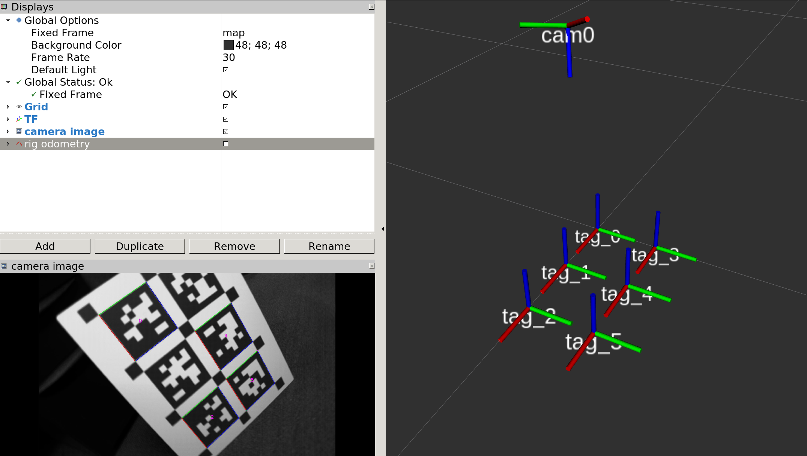

Getting Started
Installation
TagSLAM has been tested on Ubuntu 16.04 and 18.04LTS. You will need a full ROS installation (Kinetic or Melodic). For installation instructions see the tagslam root repository.
Example
In the example folder of the tagslam repository you can find a simple example for a monucular camera setup. Here’s how to run it.
Running the example directly from the bag
The example bag file already contains the extracted tags,
so you can directly feed the bag into tagslam. You need to
set use_sim_time to true so
tagslam can drive the clock.
rosparam set use_sim_time true
rviz -d `rospack find tagslam`/example/tagslam_example.rviz &
roslaunch tagslam tagslam.launch bag:=`rospack find tagslam`/example/example.bag
Rviz should show you a tag/camera configuration like the one on the image below, but without the camera image.
The program will complete too quickly to observe it in rviz, but you can ask tagslam to replay the sequence with a ROS service call (tagslam must still be running at that point):
rosservice call /tagslam/replay
Running the example in online mode
Run these three commands, each in a separate terminal when required
rosparam set use_sim_time true
roslaunch tagslam tagslam.launch run_online:=true
roslaunch tagslam apriltag_detector_node.launch
rviz -d `rospack find tagslam`/example/tagslam_example.rviz &
rosbag play --clock `rospack find tagslam`/example/example.bag --topics /pg_17274483/image_raw/compressed
If all goes well, your rviz window should look like this:

Extracting tags from images in a bag
Unless you must run online, it is best to run the tag detector on the
whole bag first, and then directly feed the detections into tagslam.
The tagslam workspace contains sync_and_detect, a tool to extract
tags and write them to a new bag. At the same time, it also synchronizes
the detections that come from multiple cameras, i.e it filters frames
that don’t have images from all configured cameras.
Here is an example of how to run it on the example bag:
roslaunch tagslam sync_and_detect.launch bag:=`rospack find tagslam`/example/example.bag
This will produce a bag in the example directory:
example.bag_output.bag
Under the topic /detector/tags the bag has the tag detections, so it
can be used to directly drive tagslam. Besides that there is the topic
/annotated_images/compressed which has the tags highlighted in the
original image.
More examples
Many more examples can be found in the tagslam test repository.